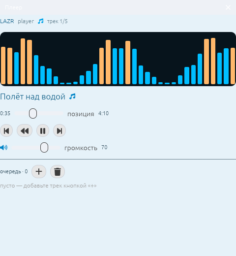
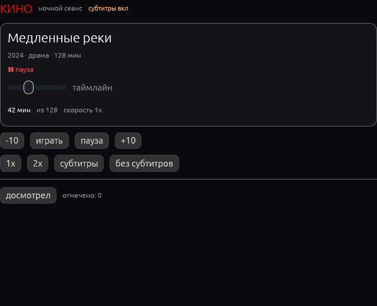
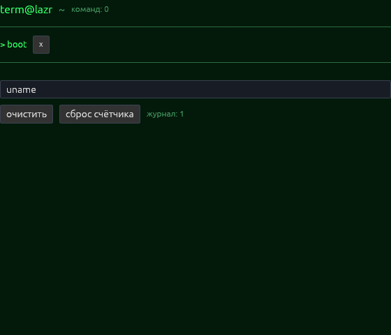
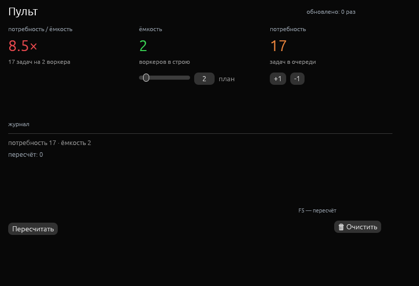
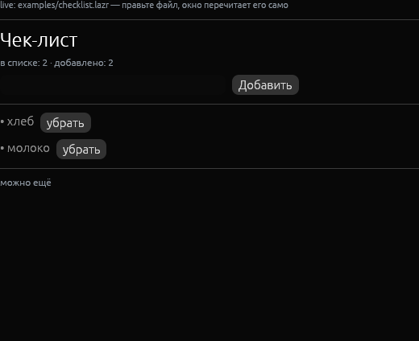

Describe a screen as data — get a real app
lazr turns a window model into a Rust + egui project, builds it and verifies it by running: it renders a frame without a window and executes every action, printing exactly what changed. The model is one file you can read and edit a line at a time.

How it works
Three steps, each verifiable by a machine. Nothing by eye.
# 1. the model: window, fields, widgets, handlers window "Tasks" 460 520 store "~/.local/share/lazr/todo.store" theme dark accent:#22d3ee panel:#070b12 round:14 state items list "milk,bread" vbox list -> items "empty" hbox label "• {item}" {mono, hint:"a list row"} button "drop" do remove items
# 2. generate and verify $ lazr build tasks $ lazr verify tasks headless ok: 3 shapes, 4 widgets in the model action "drop": items: [milk, bread] → [bread] selftest ok: 1 actions result: verified # 3. run it $ lazr run tasks
The model is read in two syntaxes: line forms (for humans and the CLI) and S-expressions
(for programs and agents). lazr live executes the forms directly, without conversion, and shows a window
that reloads the file on every change.
Demos — each built from a model
No screenshot here is drawn separately: these are windows of real apps produced by lazr build.
when … else. 46 model lines, 732 ms to build.






{item}, its own "drop" button, seed items as a comma list.Features
Everything below works in both the generator and the live engine — and is verified by running, not "should work".
The window is part of the model
chrome:own — your own frame with title, close cross and double-click to maximise;
plus resizable, topmost, transparent, drag-anywhere, min, max, center.
State between runs
store "path": fields are read at start and written on change. Writes are atomic
(temp file + rename), and ~ expands to HOME.
Typography
Your own TTF for the whole UI (font-family), monospaced text on a single widget
({mono}), hover tooltips ({hint:"…"}).
Window icon without dependencies
Our own PNG decoder: zlib with a full inflate, five filters, palette, 8 and 16 bit.
Byte-compared against ImageMagick; the window hands its icon to the manager (_NET_WM_ICON).
42 styles in one line
Frutiger Aero, Aqua, Web 2.0, Windows 95, Mac System 7, CRT green, Material 3, Neobrutalism, Cyberpunk, Nord, Catppuccin, Bauhaus… A style is data, not code.
Canonical form and checks
lazr fmt canonicalises the model (idempotently), verify prints a field diff,
and CI builds every model and runs its actions.
Honest errors
An error is data: line, code and hint. BAD_EFFECT, ELSE_WITHOUT_WHEN,
STORE_NEEDS_PATH — each tells you what to write instead.
MCP server inside
lazr mcp gives an agent tools: show the model, add a widget, build, verify —
instead of talking about architecture.
Limits, stated out loud
Honesty beats marketing: this is what lazr does not do.
Not supported
- Gradients, shadows, blur inside the app UI: egui draws flat. A style rests on palette, shape and rhythm.
- Custom widgets in the live engine:
rust-widgetis Rust, solazr liveshows an honest placeholder. - Installers and signing:
lazr packageproduces atar.gz+.desktop+ icon, not a.deband not a signature. - PNG interlacing (Adam7) and depths below 8 bit — such files are rejected with a readable message.
- Loops and function calls in handlers: one action has assignments, arithmetic,
if/else,append/remove/clear.
Quick start
You only need Rust. No Python, no node, no system libraries for the CLI itself.
# install from source git clone https://github.com/kostyk348/lazr cd lazr && cargo build --release install -Dm755 target/release/lazr ~/.local/bin/lazr # and the first window lazr new hello --title "Hello" --size 380x240 lazr state hello count int 0 lazr add hello label "Clicks: {count}" lazr add hello button "Plus" --do "count += 1" lazr run hello
# the whole CLI
lazr new | state | add | show the model
lazr build | run | headless build and launch
lazr verify build + frame + all actions
lazr lisp FILE | live FILE S-expressions and the live engine
lazr fmt FILE|DIR --check canonical model text
lazr png FILE --raw OUT our own PNG decoder
lazr package binary, desktop entry, icon
lazr mcp server for an agent
The model is plain text, so it lives in git and reads well in a diff. That also means an agent can generate, verify and rewrite the UI without opening an IDE.